A layer translator with a memory. Map messy, inconsistent drawing layers onto an established layer standard — and let it learn your conventions as you go.
Green = exact match, blue = memory match, amber (dashed) = heuristic suggestion, purple = manual match.
Point it at a drawing and it reads every layer in use, then helps you map each one to your standard naming scheme — remembering past decisions and suggesting matches for layers it has never seen before, based on pattern matching against layers it has.
If "TEXT" is favored over "TXT" elsewhere in your standard, it suggests that mapping automatically, with a confidence score you control.
Once you confirm a mapping, it's saved. The next drawing you clean up gets smarter suggestions automatically.
Source and target layers side by side, connected by lines you can draw, review, or remove — with search and filtering to focus on what's left.
Full Ctrl+Z / Ctrl+Y support while mapping, so you can experiment freely without losing your place.
Hides xref layers from the mapping view and matches bound-layer names the way you'd expect.
Select multiple layers at once to un-match, re-map, or clear them in bulk instead of one at a time.
A walkthrough of the workflow, straight from the current build. Click any image to zoom in.
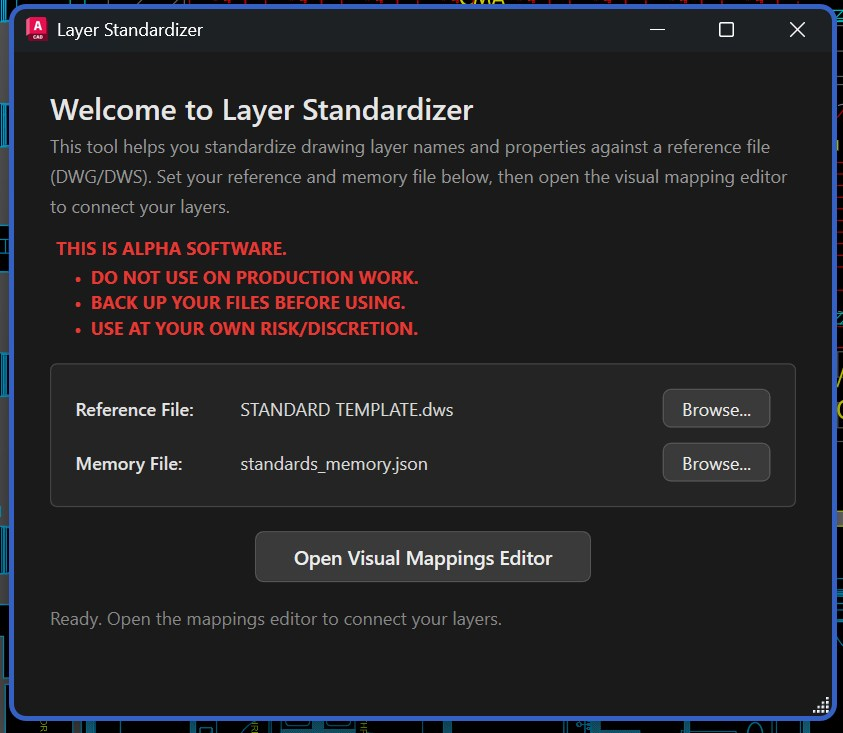
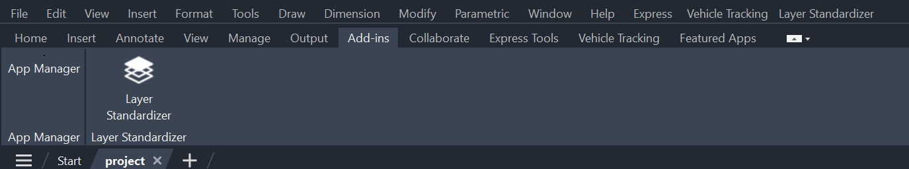
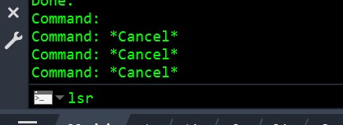
LSR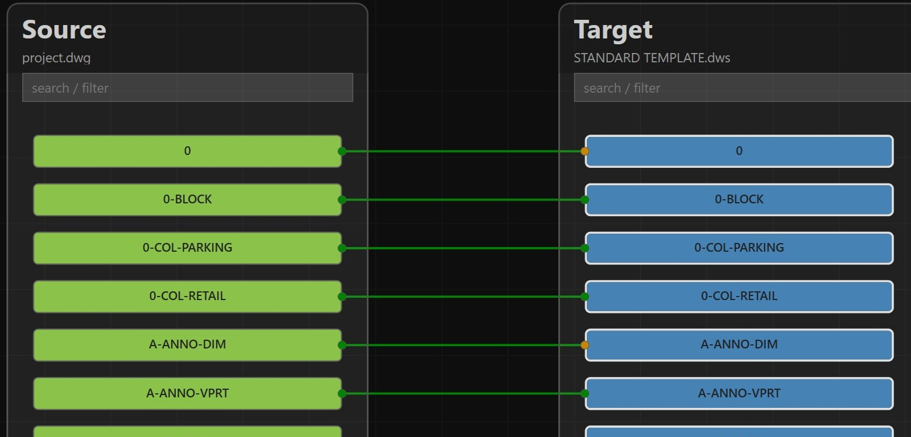
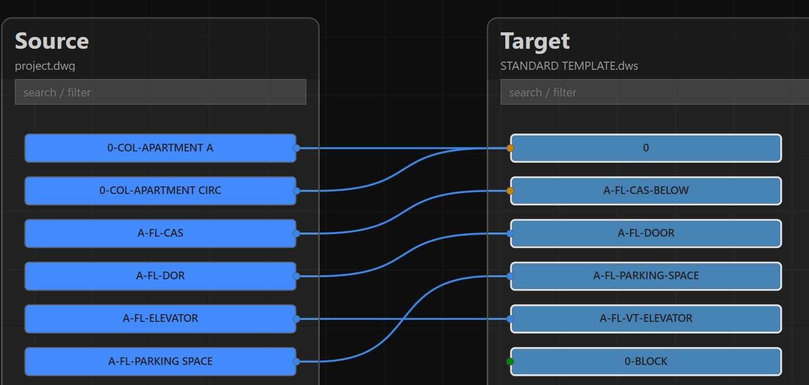
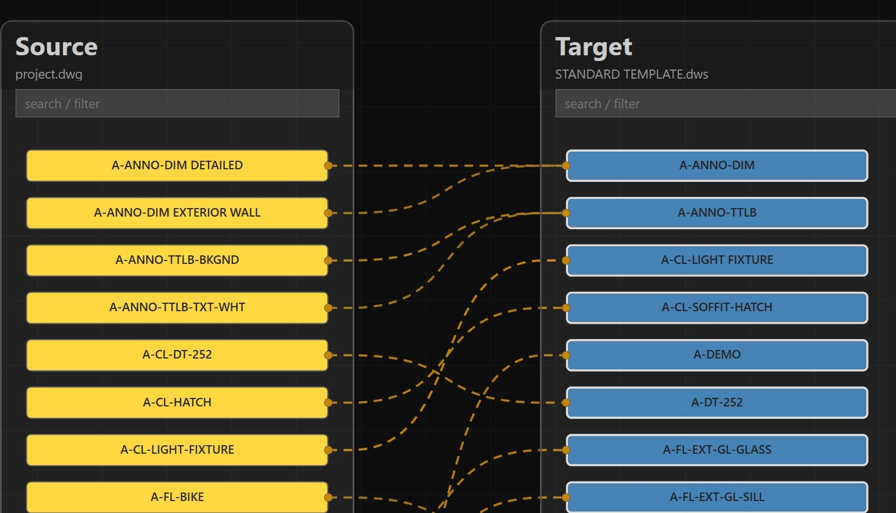
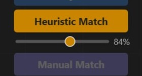
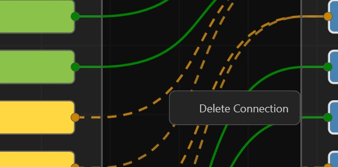
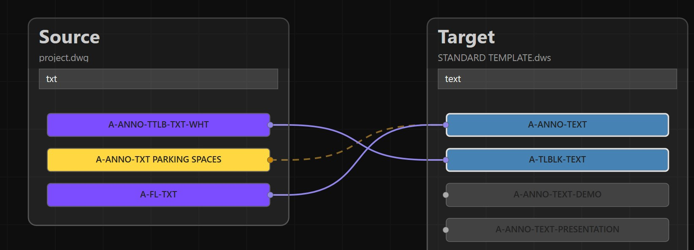
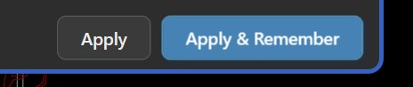
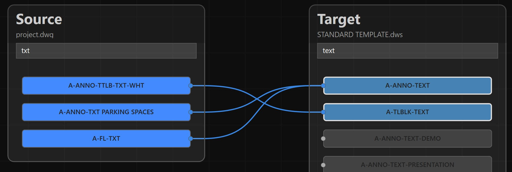
Navigating the app with hundreds of visible layers can be a pain, so there are several ways to filter the list to just what you're looking for.
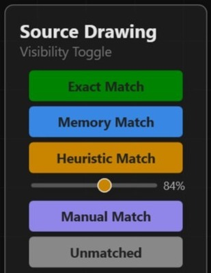
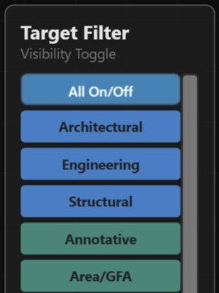
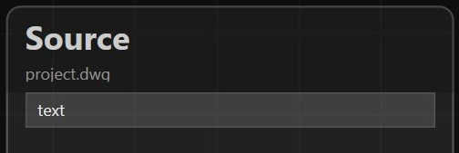
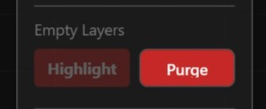
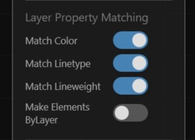
A first pass at cleaning up a drawing's layers looks like this:
Run the installer — it detects your AutoCAD version(s) and deploys the matching build automatically via the Autoloader.
With the drawing open in AutoCAD, launch the Layer Standardizer from the ribbon or type its command to open the mapping editor.
The tool compares existing layers against your standard and pre-fills high-confidence matches, flagged with a confidence score.
Connect any remaining layers by hand in the node graph, or use the filter panel to focus on unmapped layers only.
Run the standardize command to apply the mapping — renaming and consolidating layers to match your standard.
The mapping decisions you made are remembered, so the next drawing you clean up gets smarter suggestions automatically.
One installer covers all supported releases — it ships a build for each AutoCAD .NET compatibility era and AutoCAD automatically loads the right one.
| AutoCAD release | Runtime |
|---|---|
| 2021 – 2024 | .NET Framework 4.8 |
| 2025 – 2026 | .NET 8 |
| 2027 | .NET 10 |
Includes AutoCAD verticals (Civil 3D, Map 3D, Plant 3D). AutoCAD 2020 and older are not supported.
This is a personal project — I built it to solve my own layer-cleanup headaches, not as a commercial product. It's free to use, and I'm happy to share it with any other AutoCAD user who's dealt with the same problem.
If you try it and hit a bug, have an idea for a feature, or just want to say what did or
didn't work for you, I'd genuinely like to hear about it.
yiannias@gmail.com
{kind=link}